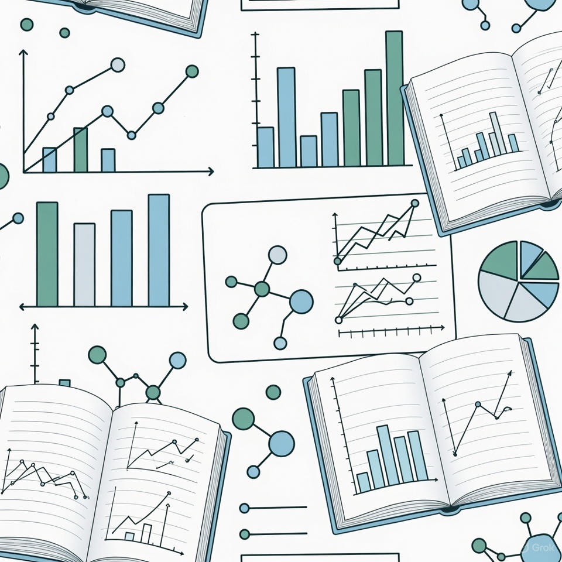

Functional biopolymers
Modeling · Process · Experiments
Engineering biopolymers from data, not guesswork.
PHA/PLA/PBS 기반 기능성 생분해 고분자를 위해 물성 예측 모델, 공정 최적화 툴, 실험 워크플로를 한곳에 모았습니다.
Tool Catalog
Loading tools...
Workflows
실험과 공정을 위한 실제 사용 사례를 통해 플랫폼의 가치를 확인해보세요.

Straw Line Optimization
Optimize draw ratio, cooling bath parameters and cutter speed to maximize mechanical properties of biodegradable straws.

Data‑driven Materials R&D
Leverage experimental datasets and machine learning models to predict Tg, Tm, modulus and toughness for novel PHA copolymers.
About
TARS Biopolymer Studio는 기능성 생분해 고분자의 물성, 공정 및 모델링을 다루는 연구자와 엔지니어를 위한 허브입니다. 오픈 소스 커뮤니티를 기반으로 실제 공정 데이터를 활용한 툴을 제공하며, 새로운 연구와 협업을 기대합니다.